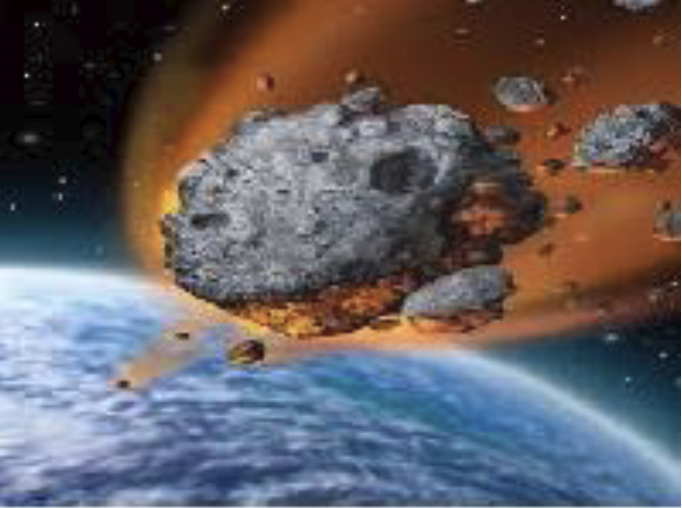

Surprised! We are not alone in space!!! Tons of debris from microscopic pieces of material to HUGE asteroids are all over the Solar System. Some of these are small enough to burn up in space. Some enter the atmosphere and burn up—which we know as shooting stars. Some will partly burn but impacts the Earth’s surface.
But which ones will simply burn up, which ones will impact with minimal impact, and which ones will cause damage? It depends on factors such as impact angle, entry speed, density of the material, where it impacts etc.
This inquiry project uses this website:
http://down2earth.eu/impact_calculator/planet.html?lang=en-US
To understand the information presented in this project you will need to understand some vocabulary.
| Impactor | Sometimes call a projectile. It is the object that will hit the earth’s surface |
|---|---|
| Richter Magnitude | The Richter scale is used to measure the strength of an earthquake. |
| Sedimentary Rock | Rock formed from layers of bits and pieces of rock fragments, bones etc., |
| Igneous Rocks | Rock formed from when lava or magma cools and solidifies. |
| Ejecta | The materials that is ejected from Earth’s surface due to the impact |
Throughout this inquiry the impactor has been set at 100m. Insert a picture of an object that is roughly 100m in size. This will give you an appreciation of the damage relative to the size of the impactor. Insert the image on the observation page.
On the simulation page select Earth and click Start. The simulation will take you to the page where you can set various parameters by using the slider attached to each parameter.
- Projectile diameter = 100m
- Trajectory angle = 45 deg.
- Speed = 50 km/s
- Target density = Water, and set water level to 10m
- Distance from Crash site: 10 km
- Projectile density = ice
- Click submit. Record the necessary information in the table in the observation table
- Click on “Data View”; summarize the damage in the observation table.
- Click “Go Back”
- Repeat the procedure with Porous Rocks, Dense Rocks, Iron
- Projectile diameter = 100m
- Trajectory angle = 45 deg.
- Speed = 50 km/s
- Projectile density =dense rocks
- Target density = Water, and set water level to 10m
- Distance from Crash site: 10 km
- Click submit. Record the necessary information in the table in the observation table
- Click on “Data View”; summarize the damage in the observation table.
- Click “Go Back”
- Repeat the procedure with distance set 20, 30, and 40 km
- Projectile diameter = 100m
- Trajectory angle = 45 deg.
- Speed = 50 km/s
- Projectile density = dense rock
- Distance from Crash site: 10 km
- Target density = water
- Water level = 10 m
- Click submit to take you to a data page. Click on “Data View”
- Complete the table in the Observation section.
- Click “Go Back”
- Repeat the procedure with sedimentary rock and igneous rocks.
| Impactor type |
Ice | Porous Rock |
Dense Rock |
Iron |
|---|---|---|---|---|
| Crater Depth | ||||
| Crater Width | ||||
| Richter magnitude | ||||
| Fireball Radius | ||||
| Damage |
| Impactor type | 10 km | 20 km | 30 km | 40 km |
|---|---|---|---|---|
| Crater Depth | ||||
| Crater Width | ||||
| Richter magnitude | ||||
| Fireball Radius |
| Damage |
| Impactor type |
Water (10m) |
Sedimentary Rocks | Igneous Rocks |
|---|---|---|---|
| Crater Depth | |||
| Crater Width | |||
| Richter magnitude | |||
| Fireball Radius | |||
| Damage |
- Which of the 4 types of impactor types causes the most damage? Cite data from the table to support your answer.
- What factors influence the size of craters formed from the impact?
- Determine how your community will be affected by an impact:
- Search and download a map of your community.
- Mark the “center” of you community...maybe its city hall, or your local high school. This is where the impactor will hit
- Use the scale on your map, the center of your community, draw circles centered on the impact site to represent 10km, 20km, 30km, and 40km from the center.
- Use the information from table 2, identify damages that would occur in your community. Be as specific as possible. Use a table like this to record the damages:
| Distance | Damages |
| 10km | |
| 20km | |
| 30km | |
| 40km |
- Asteroid have been theorized to hit Earth and other members of the Solar System in the past. Research the following events and complete the table.
| Event | When it happen | Size of impactor | Result of impact |
|---|---|---|---|
| Alvarez Hypothesis | |||
| Giant-impact hypothesis |
- Research an object in space that is on its way to the Earth.
| Name: | |
| Size: | |
| Speed: | |
| When does it impact Earth? | |
| Hypothesized effects/result of impact: |
- Data tables
- Answers to analysis questions
- Map of your community and impact description